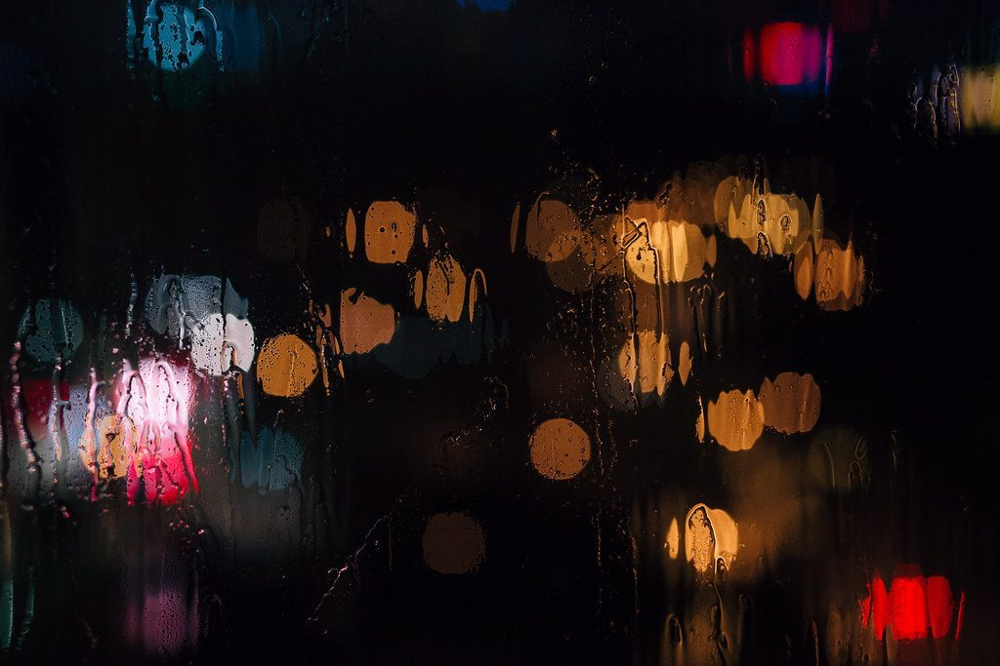

口コミ
こんな気持ちになるかもしれない
お店の名前から自然に浮かぶ気持ちを、制作側が想像して書いたものです。
以下は制作側が考えた創作のイメージ例で、実在のお客様の投稿ではありません。実際の口コミ・評価とは関係ありません。
いつか行ってみたいお店として、名前が気になっています。メテオという響きに、夜空を見上げたくなります。
まずはInstagramをのぞいてみたいです。どんな投稿があるのか、見るのが楽しみになりそうです。
機会があれば、いつか足を運んでみたいです。ガレージという言葉からも、わくわくする気持ちが広がります。
